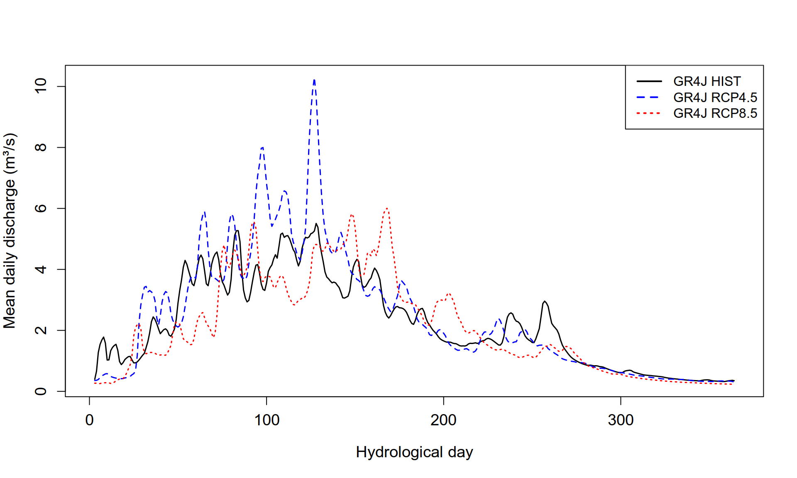
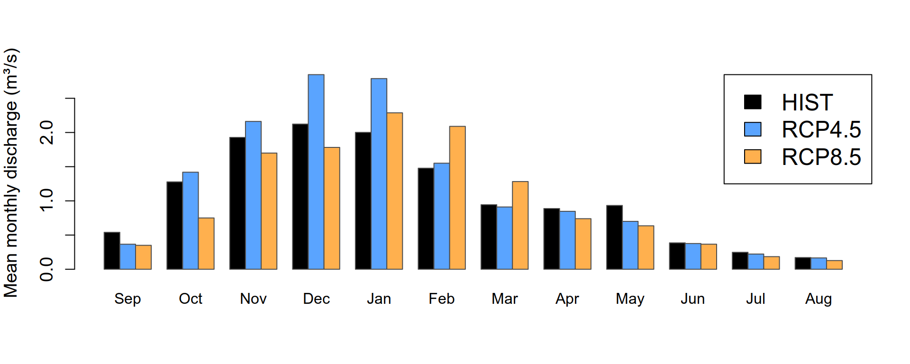
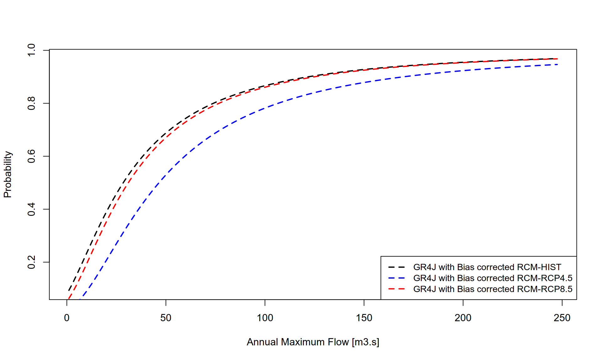

library(zoo)
library(airGR)
library(dplyr)
library(tidyr)
library(extRemes)
library(lubridate)Climate scenarios
1 Load necessary libraries
2 Load bias corrected data and calibrated GR4J parameters
gr4j_param = readRDS("output_modelcalibration/fittedGR4J_lez.rds")
str(gr4j_param) num [1:4] 247.15 1.32 116.75 1.2adjCNRM = readRDS("output_biascorrection/biascorrectedCNRM-MBCn.rds")
lapply(adjCNRM, function(df) head(df, 5))$histCNRM_adj
Date PR PR_adj PET PET_adj
1 1977-01-01 0 0 0.6549132 0.75
2 1977-01-02 0 0 0.6684382 0.80
3 1977-01-03 0 0 0.7041511 0.90
4 1977-01-04 0 0 0.6641879 0.80
5 1977-01-05 0 0 0.7342219 1.10
$rcp45CNRM_adj
Date PR PR_adj PET PET_adj
1 2070-01-01 0.0000000 0.000000 0.4991833 0.2233998
2 2070-01-02 1.1682000 0.000000 0.5232178 0.2230594
3 2070-01-03 0.0019633 0.000000 0.7814048 1.1674067
4 2070-01-04 0.1963200 0.000000 0.7076990 0.9508713
5 2070-01-05 3.1049000 6.629366 0.5511199 0.6601832
$rcp85CNRM_adj
Date PR PR_adj PET PET_adj
1 2070-01-01 0.290380 0.1240683 0.7171000 0.9236334
2 2070-01-02 3.892100 5.6906727 0.7403796 0.6964538
3 2070-01-03 0.623500 0.1127146 0.7864600 0.8681198
4 2070-01-04 0.000000 0.3229529 0.9676216 1.6836663
5 2070-01-05 0.080232 0.0000000 1.0305621 1.8004305As in the previous sections, we source the run_gr4j_simulation(...) helper function that prepares all required input objects for the GR4J model using already calibrated parameters.
github_repo = paste0("https://raw.githubusercontent.com/",
"diopBachir/tp_modhydroclimat/main/")
source(file.path(github_repo, "helper_functions/run_gr4j_simulation.R"))Next, we run the GR4J with the historical, RCP45 and RCP85 bias-corrected data.
gr4jsim_hist_CNRM = run_gr4j_simulation(
adjCNRM[["histCNRM_adj"]], "PR_adj", "PET_adj", NA, gr4j_param
)[,c("Date", "Qsim")]
gr4jsim_rcp45_CNRM = run_gr4j_simulation(
adjCNRM[["rcp45CNRM_adj"]], "PR_adj", "PET_adj", NA, gr4j_param
)[,c("Date", "Qsim")]
gr4jsim_rcp85_CNRM = run_gr4j_simulation(
adjCNRM[["rcp85CNRM_adj"]], "PR_adj", "PET_adj", NA, gr4j_param
)[,c("Date", "Qsim")]3 Comparison of historical and projected (RCP4.5 and RCP8.5) mean daily and monthly discharge
Let’s plot the mean daily and monthly discharge for the historical, RCP4.5 and RCP8.5 simulations. We source, in the chunk below, the compute_mean_daily_cycle(...) helper function.
source(file.path(github_repo, "helper_functions/compute_mean_daily_cycle.R"))histGR4J_CNRM = compute_mean_daily_cycle(gr4jsim_hist_CNRM, "HIST", "Qsim")
rcp45GR4J_CNRM = compute_mean_daily_cycle(gr4jsim_rcp45_CNRM, "RCP4.5", "Qsim")
rcp85GR4J_CNRM = compute_mean_daily_cycle(gr4jsim_rcp85_CNRM, "RCP8.5", "Qsim")Now we plot the mean daily discharge over the hydrological year to evaluate the climate signal.
Show the code
all_days = histGR4J_CNRM$HydroDOY
hist_rm = rollmean(histGR4J_CNRM$MeanDailyQ, k = 20, align = "center", fill = NA)
rcp45_rm = rollmean(rcp45GR4J_CNRM$MeanDailyQ, k = 20, align = "center", fill = NA)
rcp85_rm = rollmean(rcp85GR4J_CNRM$MeanDailyQ, k = 20, align = "center", fill = NA)
y_range = range(c(hist_rm, rcp45_rm, rcp85_rm), na.rm = TRUE)
plot(histGR4J_CNRM$HydroDOY, hist_rm,
type = "l", lwd = 1.5,
lty = 3,
col = "black",
ylim = y_range,
cex.lab = 1.2,
cex.axis = 1.2,
xlab = "Hydrological day",
ylab = "Mean daily discharge (m³/s)")
lines(rcp45GR4J_CNRM$HydroDOY, rcp45_rm,
col = "blue", lwd = 1.5, lty = 1)
lines(rcp85GR4J_CNRM$HydroDOY, rcp85_rm,
col = "red", lwd = 1.5, lty = 1)
legend("topright",
legend = c("GR4J with Bias corrected RCM-HIST",
"GR4J with Bias corrected RCM-RCP4.5",
"GR4J with Bias corrected RCM-RCP8.5"),
col = c("black", "blue", "red"),
lty = c(3, 1, 1),
lwd = 2,
bty = "o")
We also plot the mean monthly discharge
Show the code
compute_monthly_mean = function(df, Q_col) {
df %>%
mutate(
Date = as.Date(Date),
Month = month(Date)
) %>%
group_by(Month) %>%
summarise(
MeanQ = mean(.data[[Q_col]], na.rm = TRUE),
.groups = "drop"
) %>%
arrange(Month)
}
hist_mon = compute_monthly_mean(gr4jsim_hist_CNRM, "Qsim")
rcp45_mon = compute_monthly_mean(gr4jsim_rcp45_CNRM, "Qsim")
rcp85_mon = compute_monthly_mean(gr4jsim_rcp85_CNRM, "Qsim")
hydro_months = c(9:12, 1:8)
hydro_labels = month.abb[hydro_months]
hist_mon = hist_mon %>% slice(match(hydro_months, Month))
rcp45_mon = rcp45_mon %>% slice(match(hydro_months, Month))
rcp85_mon = rcp85_mon %>% slice(match(hydro_months, Month))
bar_mat = rbind(
HIST = hist_mon$MeanQ,
RCP4.5 = rcp45_mon$MeanQ,
RCP8.5 = rcp85_mon$MeanQ
)
barplot(bar_mat,
beside = TRUE,
col = c("black", "#5aa4ff", "#ffb04e"),
border = "gray30",
ylab = "Mean monthly discharge (m³/s)",
xlab = "",
cex.lab = 1.2,
cex.axis = 1.2,
names.arg = hydro_labels,
legend.text = rownames(bar_mat),
args.legend = list(
x = "topright",
bty = "o",
cex = 1.5
))
4 Extreme value analysis
To assess the impact of climate change on high flows, we performed an extreme value analysis using the Annual Maximum Flood (AMF) method. Annual peak discharge values were extracted for each hydrological year (September to August) and a Generalized Extreme Value (GEV) distribution was fitted using the Generalized Maximum Likelihood Estimation (GMLE) method. This approach allows us to estimate the magnitude of rare events, which are critical for infrastructure design and flood risk management.
Show the code
extract_amax = function(df, Q_col = "Qsim")
{
df %>%
mutate(
# Revert selected Q from mm to m3/s (assuming area is 178 km2)
# .data[[...]] allows us to reference the column dynamically
Q_val = (.data[[Q_col]] * 178) / 86.4,
Date = as.Date(Date),
# Define Water Year (Sept 1st)
WaterYear = ifelse(month(Date) >= 9, year(Date) + 1, year(Date))
) %>%
group_by(WaterYear) %>%
summarise(AMF = max(Q_val, na.rm = TRUE), .groups = "drop") %>%
pull(AMF)
}
# extract annual maximum flow
amf_hist = extract_amax(gr4jsim_hist_CNRM)
amf_rcp45 = extract_amax(gr4jsim_rcp45_CNRM)
amf_rcp85 = extract_amax(gr4jsim_rcp85_CNRM)
# fit the GEV distribution using the L-moments
fit_hist = fevd(amf_hist, type = "GEV", method = "GMLE")
fit_rcp45 = fevd(amf_rcp45, type = "GEV", method = "GMLE")
fit_rcp85 = fevd(amf_rcp85, type = "GEV", method = "GMLE")
# Create a sequence of flow values (Annual Maxima)
flow_range = seq(min(c(amf_hist, amf_rcp45, amf_rcp85)),
max(c(amf_hist, amf_rcp45, amf_rcp85)),
length.out = 200)
# Calculate probabilities for each scenario using the fitted parameters
p_hist = extRemes::pevd(flow_range, loc = fit_hist$results$par[1],
scale = fit_hist$results$par[2],
shape = fit_hist$results$par[3])
p_rcp45 = extRemes::pevd(flow_range, loc = fit_rcp45$results$par[1],
scale = fit_rcp45$results$par[2],
shape = fit_rcp45$results$par[3])
p_rcp85 = extRemes::pevd(flow_range, loc = fit_rcp85$results$par[1],
scale = fit_rcp85$results$par[2],
shape = fit_rcp85$results$par[3])
# Plot the Probability (CDF)
plot(flow_range, p_hist, type = "l", lwd = 2, col = "black", lty = 2,
xlab = "Annual Maximum Flow [m3.s]",
ylab = "Probability")
lines(flow_range, p_rcp45, col = "blue", lwd = 2, lty = 2)
lines(flow_range, p_rcp85, col = "red", lwd = 2, lty = 2)
legend("bottomright",
legend = c("GR4J with Bias corrected RCM-HIST",
"GR4J with Bias corrected RCM-RCP4.5",
"GR4J with Bias corrected RCM-RCP8.5"),
col = c("black", "blue", "red"),
lty = c(2, 2, 2),
lwd = 2,
bty = "o",
cex = .9)
5 Exercices
5.1 Exercice 1: GR4J with MHI-MPI
Perform a climate change impact assessment using the calibrated GR4J model driven by bias-corrected SMHI-MPI climate projections.
Analyze and discuss the changes relative to the reference period using the same hydrological indicators as previously defined.
5.2 Exercice 2: IHACRES with CNRM
Perform the same climate change impact assessment using the calibrated IHACRES model driven by bias-corrected CNRM climate projections.
Compare the results with those obtained in Exercise 1 and discuss the differences.
5.3 Exercice 3: IHACRES with SMHI–MPI
Perform the same climate change impact assessment using the calibrated IHACRES model driven by bias-corrected SMHI–MPI climate projections.
Discuss the relative influence of the hydrological model and the climate model on the projected hydrological changes.
5.4 Exercice 4: Synthesis question
Based on all exercises, discuss the sensitivity of climate change impact assessments to:
- the choice of hydrological model,
- the choice of climate model.